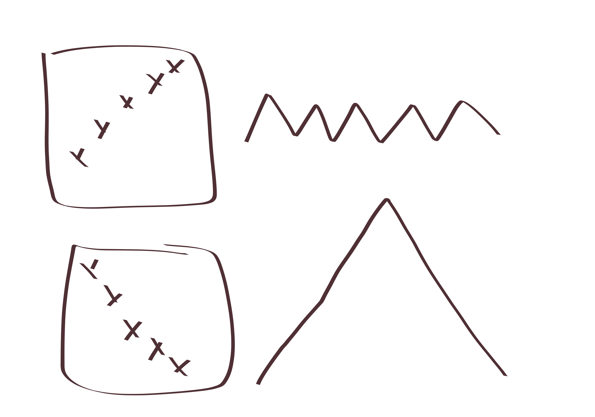
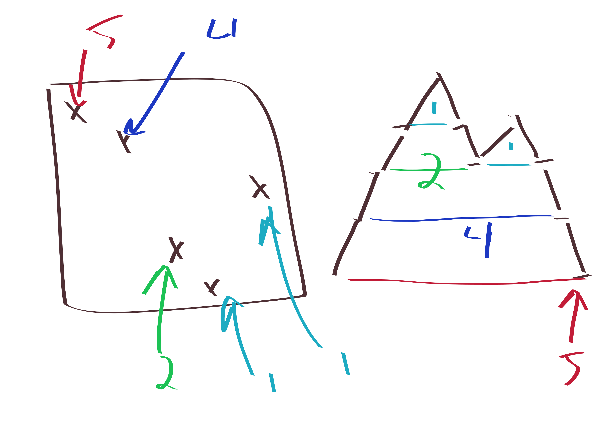

A very famous result is that if \(\sigma\in S_3\) is any \(3\)-letter permutation, then the number of \(n\)-letter permutations which avoid \(\sigma\) is counted by the catalan numbers \(C_n\), which is pretty cool!
Here’s a proof for \(\sigma=231\) (you can check the other \(5\) cases yourself, at least one is immediate by symmetry)
So here’s the proof: Let \(\pi\in S_n\) be a \(231\)-avoiding permutation. Then, the corresponding Dyck path will return to height \(0\) for the first time after exactly \(2\pi_1\) steps. Now you recursively find the segment before the return, and recursively find the segment after the return.
 
Basically, the key to note is that after you fix \(\pi_1\) then you have to deal with everything less than \(\pi_1\) before dealing with anything larger than \(\pi_1\), because once you leave the below \(\pi_1\) teritory, you can’t return. ever.
another neat problem; unrelated
Let \(F_n\) denote the \(n\)-th fibonacci number. Then: \[F_{2n}^2 +1 = F_{2n+2}F_{2n-2}.\]
some blog-y stuff: you know, this seems like a really easy problem. But as I like to say
you should try to do lots of problems and not worry too much about them being “too easy”. I didn’t really think it was a very easy problem, it took my a while to think of a solution. I don’t think the amount of time that it takes to solve is particularly relavant though. Really what it means to be a good mathematician is 1. you care about understanding things like this. even if it’s a simple problem, and not an original result or anything; 2. you are willing to persist and stuff. and not get upset about the process, but enjoy it. as I like to say “don’t become so obsessed with where you are going that you forget why you are going there” and forget to take some cool pictures on your way and get dominos. I mean yes, you shouldn’t try to take on too many problems at once either. But trying lots of problems is good.
anyways that’s just what I like to say. But here’s the solution:
\(F_n\) counts the number of domino tilings of \(2\times n\) rectangle. If we do \(F_a\cdot F_b\) this is domino tilings of \(2\times (a+b)\) grid, except we ban a domino crossing the \(a\) line. So we just have to show a bijection between some sets of domino tilings of a \(2\times 4n\) grid, with different banned crossing lines. And we basically do this by just pushing the horizontal domino to the right and bumping out whatever’s in its place and then recursively repeating the bumping stuff.